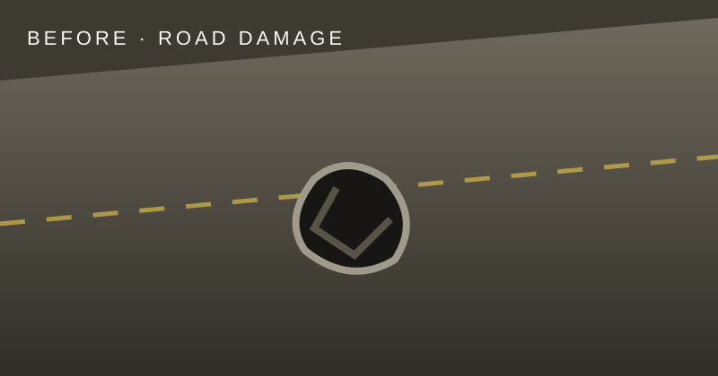
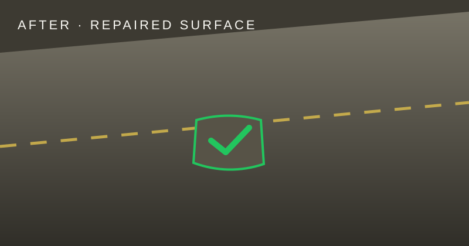

COMMUNITY ROAD INTELLIGENCE
Know the Road
Before You Take It.
Report, verify and discover road hazards with your community.
REPORT
Tell us what is wrong.
VERIFY
The community confirms what is happening.
ROUTE
Find routes with lower reported hazard exposure.
RESOLVE
Maintenance teams update the road condition.
INTERACTIVE INTELLIGENCE · HYDERABAD
Live Road Hazard Map
Explore community road reports around Hyderabad. Filter by issue type or severity to see what has been reported nearby.
Demo mode uses illustrative Hyderabad reports. Connect your Supabase project to show shared community reports.
01 / REPORT
Make the road visible.
Report potholes, damaged surfaces, broken streetlights, blocked footpaths and other hazards directly from the road.
Report a Hazard →02 / VERIFY
Not every report tells the whole story.
Community verification helps distinguish real hazards from outdated or inaccurate reports.
Join Community →CIVIC RESOLUTION
From reported damage to visible repair.
Maintenance teams can document the condition before and after work, giving the community a clearer resolution history.
BEFORE · ROAD DAMAGE

Reported road surface damage
AFTER · RESOLVED

Repair evidence submitted by the maintenance team
SAFER ROADS, TOGETHER
Features
Everything you need to understand road conditions, contribute useful reports and check routes before you travel.
Live Hazard Map
Explore reported road issues and filter them by category or severity.
Explore the map → 02Add / Check Route
Add multiple locations and review reported hazards near your route.
Check a route → 03Report a Hazard
Share the location, photo and details of a road hazard with the community.
Create a report → 04Community Verification
Confirm whether reported hazards are still present or have been resolved.
Join the community →HELP & INFORMATION
Frequently asked questions
A few quick answers about how SafeRoute works.
What is SafeRoute?
SafeRoute is a community-powered platform for reporting road hazards, checking reported conditions and reviewing route exposure.
How do I report a road hazard?
Open Report a Hazard, choose the issue category, add a photo if available, confirm its location and submit the report.
How can I check hazards along a route?
Open Routes, add at least two locations using map clicks or coordinates, then select Check Route to see nearby reported hazards.
Are all road reports verified in real time?
Community responses and connected Supabase updates can refresh report counts. Demo data is illustrative and may not represent current road conditions.